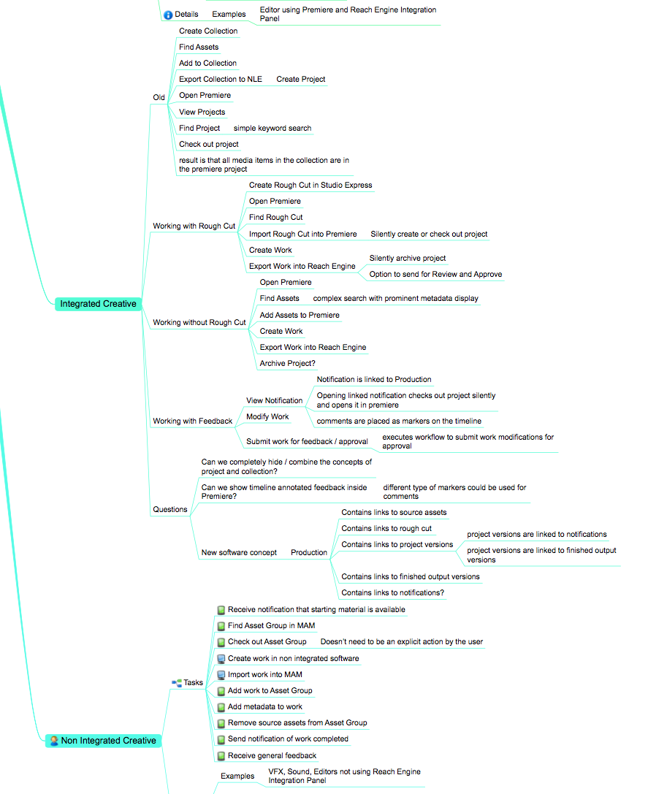
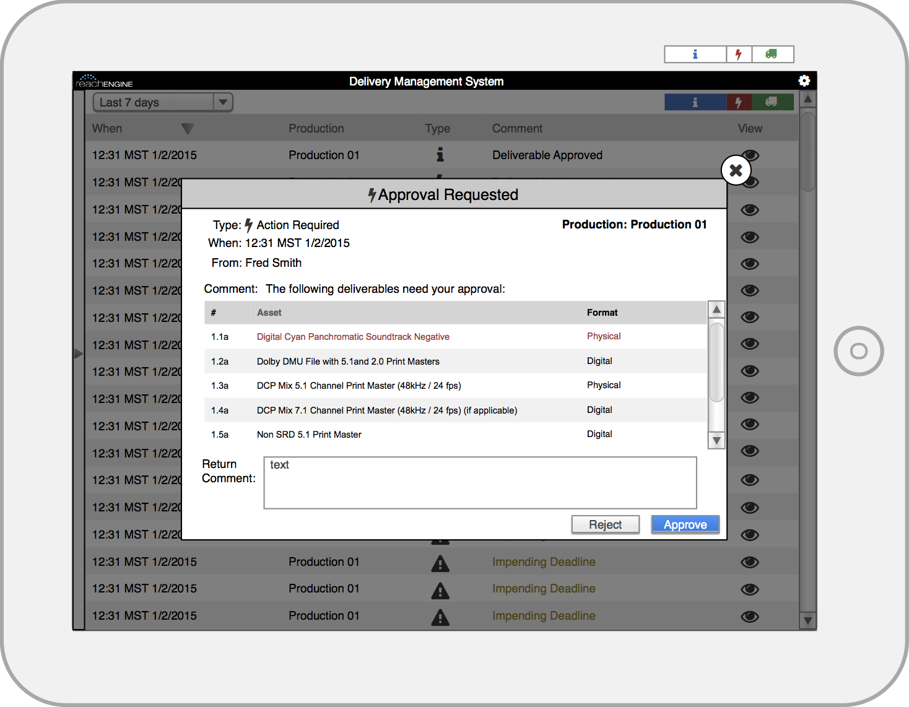

Overview
While I have experience creating a wide variety of UX Artifacts, I am generally not a fan of documentation as a means of knowledge transfer except at specific boundaries. Where available I prefer high bandwidth communication for knowledge transfer. In that spirit, the list of artifacts generated on each project varies depending on the needs and circumstances of the project. Here is a general process that I follow on UX projects.
Discovery
My first exposure to projects is generally the business stakeholders who create and fund the interface that the users interact with. Frequently these stakeholders are also subject matter experts and help me get a lay of the land for the project. During this initial discovery I gain an understanding of the space that the interface will compete in, roughly who the users and key tasks are, what the stakeholder interests in the interface are, and what metrics will be used to determine the success of the project. I create a user model at the appropriate level of detail and begin interviewing users to iterate, improve the model, and identify pain points. I detail out any high risk interactions and create use cases at the appropriate level of detail, from brief to fully dressed.

Sample User Model

Sample Sequence Diagram
Creation
The first interface iterations happen in low fidelity, focusing on the main or highest risk interactions. As the iterations proceed, the specifics of each remaining user interaction are fleshed out. A user centric domain model is available at this point for Engineering or QA. I can approve and integrate creative into higher fidelity wireframe templates to quickly crank out artifacts that can double as comps. I can work with Creative Directors or Designers to create a consistent design language and interaction model so that Engineeering can easily find anything from the standard drop shadows on control popups to detailed specifications on how notifications work.
If I'm interfacing with an Agile Product Management department I can deliver the interface in Epics. If I am wearing the Product Owner hat, I can decompose the Epic into Stories. While delivering efficiently consumable information to Engineering, I recommend maintaining a UX knowledge store. This allows Engineering stories to be lightweight and weather multiple reschedulings well, while also linking to the latest UX specifications and metaphors.

Sample Low Fidelity Wireframe

Sample High Fidelity Wireframe
Completion / Team Interactions
Ultimately the success of a feature or product depend on both the users and stakeholders being satisfied. I can insert UX signoff as a pull request step to ensure nothing falls through the cracks while the engineering / UX interface is being developed. I am a proponent of QA placing themselves in the role of the user during their testing.